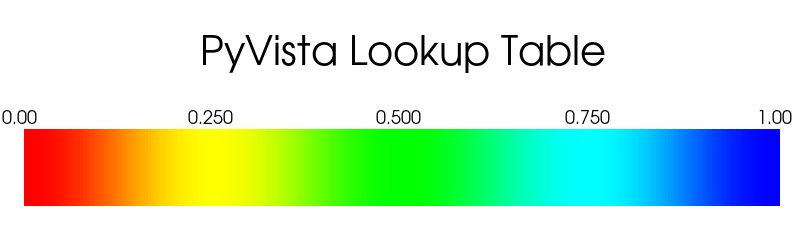

pyvista.LookupTable#
- class LookupTable(cmap=None, n_values=256, flip=False, values=None, value_range=None, hue_range=None, alpha_range=None, scalar_range=None, log_scale=None, nan_color=None, above_range_color=None, below_range_color=None, ramp=None, annotations=None)[ソース]#
スカラからRGBAへのマッピングテーブル．
ルックアップテーブルは，入力値と出力値を対応させる配列です．データセット上のデータをプロットする場合，スカラーを色（RGBA形式）に対応付ける必要があるが，このクラスはそのための機能を提供します．
VTK API の詳細については， vtkLookupTable を参照してください．
- パラメータ:
- cmap
str|colors.Colormap,optional matplotlib,colorcet, またはcmoceanから取得したcmapとvaluesのどちらかを指定することができますが，両方を指定することはできません．- n_values
int, default: 256 カラーマップの色数．
- flipbool, default:
False cmapの方向を反転します．ほとんどのカラーマップでは，
*_rサフィックスも同様にこれを行うことができます．- valuesarray_like[
float],optional ルックアップテーブルの値．
valuesとcmapのどちらかを指定することができますが，両方を指定することはできません．- value_range
tuple,optional マップされたルックアップテーブルの明るさの範囲です．この範囲は，カスタムカラーマップを作成するときにのみ使用され，
cmapが設定されている場合は無視されます．- hue_range
tuple,optional ルックアップテーブルの色相範囲．この範囲は，カスタムカラーマップを作成するときにのみ使用され，
cmapが設定されている場合は無視されます．- alpha_range
tuple,optional ルックアップテーブルのアルファ (透明度) 範囲．この範囲は，カスタムカラーマップを作成するときにのみ使用され，
cmapが設定されている場合は無視されます．- scalar_range
tuple,optional 色にマッピングされるスカラーの範囲です．この範囲外の値は :attr`LookupTable.below_range_color` と :attr`LookupTable.above_range_color` に従って色付けされます．
- log_scalebool,
optional スカラー値をマッピングする際に，対数スケールを使用します．
- nan_color
ColorLike,optional NANであるすべての値をレンダリングするための色．
- above_range_color
ColorLike,optional LookupTable.scalar_range以上の値をレンダリングするための色です．- below_range_color
ColorLike,optional LookupTable.scalar_range以下の値をレンダリングするための色です．- ramp
str,optional テーブルランプの形状を指定します．この範囲は，カスタムカラーマップを作成するときにのみ使用され，
cmapが設定されている場合は無視されます．- annotations
dict,optional 注釈の辞書．キーはスカラー範囲のfloat値で，スカラーバーに注釈を付けます．値は文字列注釈です．
- cmap
例
ルックアップテーブルをデフォルトのVTKカラーマップでプロットします．
>>> import pyvista as pv >>> lut = pv.LookupTable() >>> lut LookupTable (...) Table Range: (0.0, 1.0) N Values: 256 Above Range Color: None Below Range Color: None NAN Color: Color(name='maroon', hex='#800000ff', opacity=255) Log Scale: False Color Map: "PyVista Lookup Table" Alpha Range: (1.0, 1.0) Hue Range: (0.0, 0.66667) Saturation Range (1.0, 1.0) Value Range (1.0, 1.0) Ramp s-curve >>> lut.plot()
 ルックアップテーブルを
'inferno'カラーマップでプロットします．>>> import pyvista as pv >>> lut = pv.LookupTable('inferno', n_values=32) >>> lut LookupTable (...) Table Range: (0.0, 1.0) N Values: 32 Above Range Color: None Below Range Color: None NAN Color: Color(name='maroon', hex='#800000ff', opacity=255) Log Scale: False Color Map: "inferno" >>> lut.plot()
メソッド
LookupTable.apply_cmap(cmap[, n_values, flip])このルックアップテーブルにカラーマップを割り当てます．
LookupTable.apply_opacity(opacity[, ...])このルックアップテーブルにカスタムオパシティを割り当てます．
LookupTable.map_value(value[, opacity])一つの値をルックアップテーブルでマッピングし，RBG(A)カラーを返します．
LookupTable.plot(**kwargs)このルックアップテーブルをプロットします．
カラーマップをクリアして，値テーブルを再計算します．
このテーブルの VTK カラー伝達関数を返します．
このテーブルの不透明度伝達関数を返します．
アトリビュート
上記の範囲の色を返すか設定します．
上記の範囲の不透明度を返すか設定します．
アルファレンジを返すか設定します．
アノテーションを返すか設定します．
下記の範囲の色を返すか設定します．
下記の範囲の不透明度を返すか設定します．
このルックアップテーブルで使用されるカラーマップを返すか設定します．
色相範囲を返すか設定します．
対数スケールを使用します．
ルックアップテーブルの値の個数を返すか設定します．
NAN（Not a Number）の色を返すか設定します．
NAN（Not a Number）の不透明度を返すか設定します．
テーブルランプの形状を設定します．
彩度範囲を戻す，または設定します．
テーブルの範囲を返すかまたは設定します．
マップされたルックアップテーブルの明るさを返すか設定します．
ルックアップテーブルの値を返すか設定します．